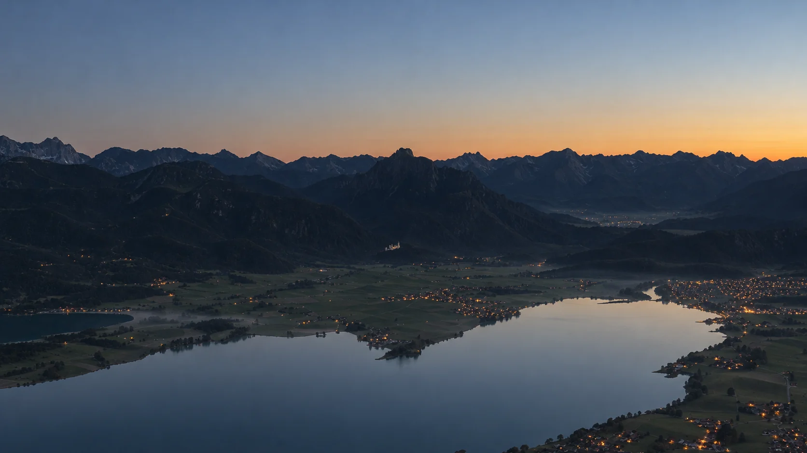
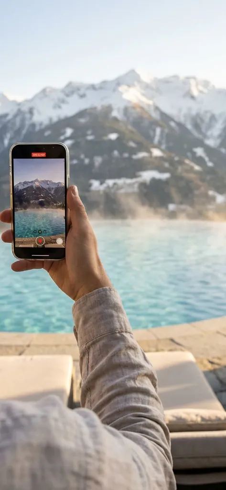
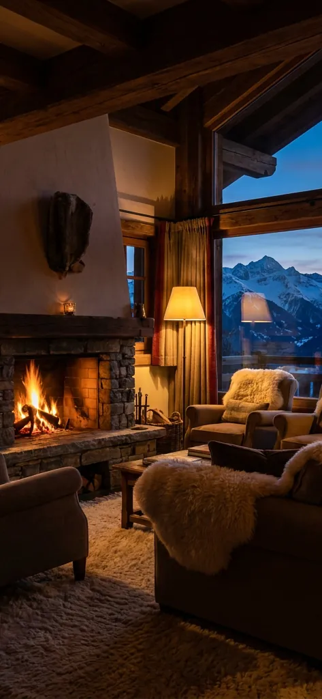
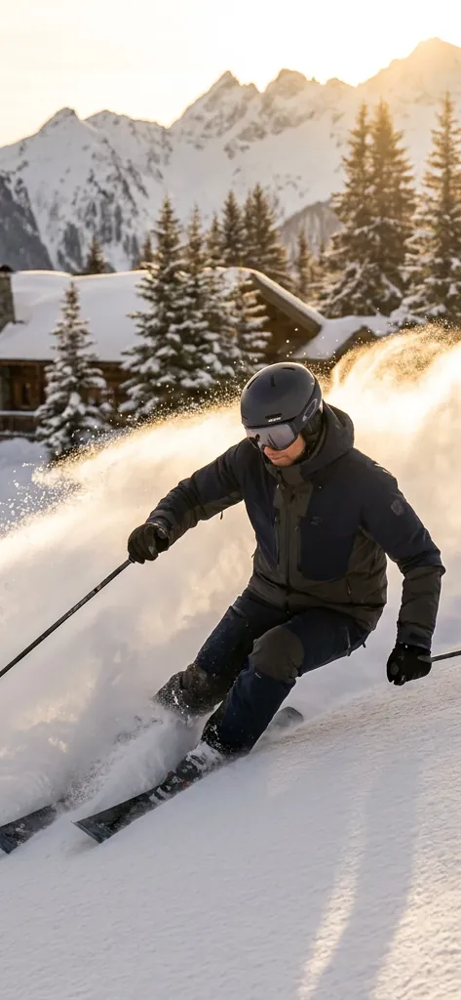
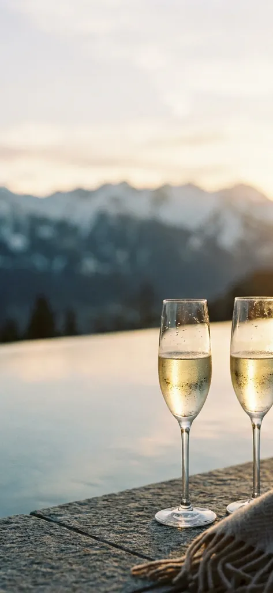

Was wir lösen
Fast jeder Betrieb in den Alpen kennt stille Wochen zwischen den Saisons. Wir zeigen Sie dort, wo Gäste ihre Reise und ihre Ausflüge planen: auf dem Handy.

Digital Media Marketing · Füssen
Für Hotels, Bergbahnen und Thermen: Wir filmen und fotografieren bei Ihnen und machen daraus Reels und Posts. Gäste finden Sie und buchen direkt, ohne Provision an Portale.
Warum Blaue Stunde
Fast jeder Betrieb in den Alpen kennt stille Wochen zwischen den Saisons. Wir zeigen Sie dort, wo Gäste ihre Reise und ihre Ausflüge planen: auf dem Handy.
Ein kleines Team, das zu Ihnen kommt und mit Ihren Leuten arbeitet. Wir reden ohne Fachjargon und arbeiten ohne Knebelverträge.
Drei Bereiche
Kanäle
Wir planen, drehen, schneiden und posten. Alles aus einer Hand.
Bühne. Reels · Carousels · Stories
Zeigt, wie sich ein Aufenthalt bei Ihnen anfühlt.
Entscheidung. Shorts · Filme
Shorts für den ersten Eindruck, längere Filme über Zimmer, Spa und Umgebung.
Nähe. Beiträge · Veranstaltungen
Neuigkeiten und Angebote für Stammgäste und die Region.
Welche Kanäle passen, entscheiden wir gemeinsam.
So arbeiten wir
Wir lernen Ihr Haus und Ihre Gäste kennen und machen erste Aufnahmen.
Zweimal im Jahr drehen wir Material für viele Reels und Posts.
Schöne Momente aus dem Alltag schickt Ihr Team vom Handy.
Wir bearbeiten und planen nach Trend und Saison. Jeder Beitrag wird vorher geprüft.
Wir veröffentlichen und zeigen Ihnen, was bei den Buchungen ankommt.
So kann es aussehen
Beispiele, noch ohne Kundenzahlen. Stil und Kampagne stimmen wir mit Ihnen ab.

Morgen am Pool Atmosphäre, die man speichert

Abend im Chalet Ankommen, Feuer an, Ruhe

Powder Day Action, die im Feed hängen bleibt

Sunset Service Ein Moment, den Gäste teilen
Sprechen wir
Schreiben Sie uns kurz zu Ihrem Hotel, Ihrer Bergbahn oder Ihrer Therme. Wir melden uns innerhalb von drei Werktagen mit Ideen.
Ihre Ansprechpartner
 Nicolas Lekai Creative Direction
Nicolas Lekai Creative Direction
 Daniel Lenzenhuber Management
Daniel Lenzenhuber Management
 Raffaele Fusco Web Designer & Developer
Raffaele Fusco Web Designer & Developer